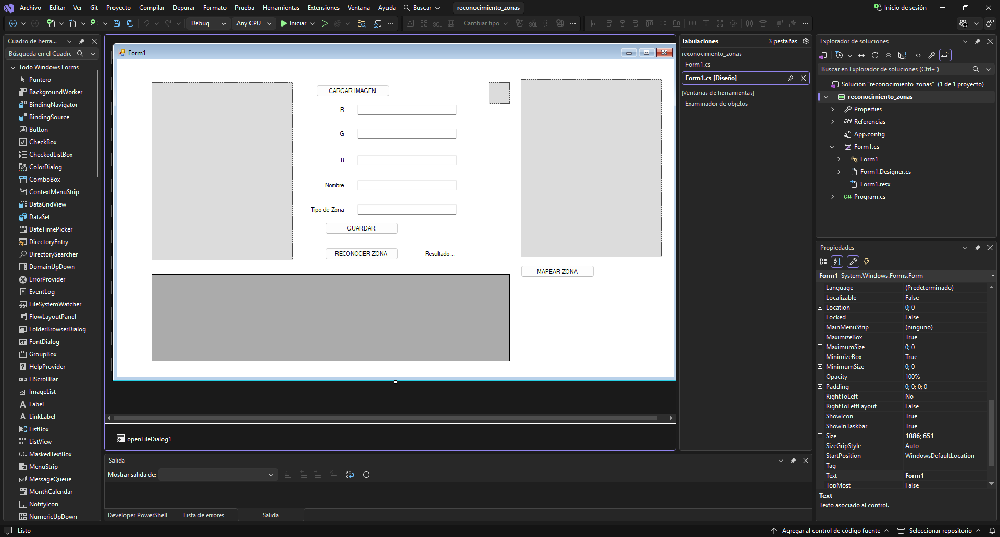
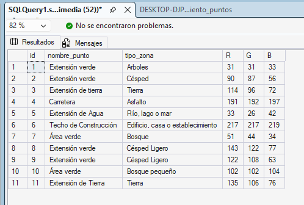
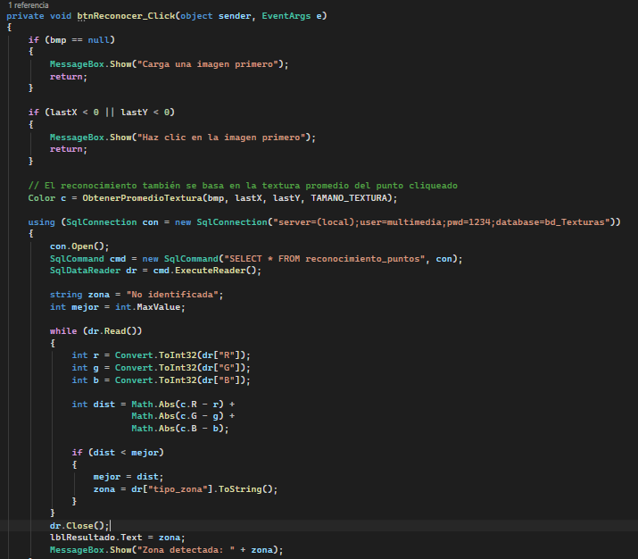
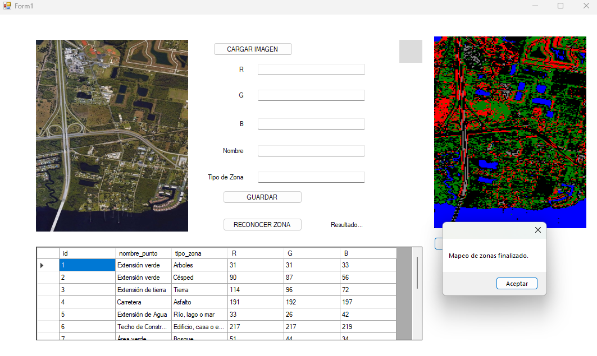

Formulario desarrollado en Windows Forms. Incluye un PictureBox para mostrar la imagen, cuadros de texto para visualizar los valores RGB y una tabla para registrar la información obtenida al seleccionar un punto de la imagen.

Vista de la tabla reconocimiento_puntos donde se almacenan los datos registrados. Se guardan el nombre del punto, el tipo de zona y los valores de color RGB obtenidos desde la imagen.

Proceso utilizado para identificar la zona de un píxel. El sistema compara los valores RGB seleccionados con los registros almacenados en la base de datos y determina cuál es el más parecido.

Resultado después de registrar un nuevo punto. La tabla se actualiza automáticamente para mostrar la información guardada en la base de datos, permitiendo verificar que el registro se realizó correctamente.
Dado que este módulo requiere una conexión activa a un servidor de base de datos relacional local (SQL Server), la ejecución en tiempo real mediante botones web directos está deshabilitada por restricciones de arquitectura de red del navegador. A continuación se expone el bloque de código C# implementado para este fin:
using System;
using System.Collections.Generic;
using System.ComponentModel;
using System.Data;
using System.Drawing;
using System.Linq;
using System.Text;
using System.Threading.Tasks;
using System.Windows.Forms;
using System.Data.SqlClient;
namespace reconocimiento_zonas
{
public partial class Form1 : Form
{
Bitmap bmp;
int lastX, lastY;
private const int TAMANO_TEXTURA = 5;
public Form1()
{
InitializeComponent();
RefrescarGrid();
}
public class Textura
{
public string Tipo { get; set; }
public int R { get; set; }
public int G { get; set; }
public int B { get; set; }
}
private void RefrescarGrid()
{
try
{
using (SqlConnection con = new SqlConnection("server=(local); user=multimedia; pwd=1234; database=bd_Texturas"))
{
SqlDataAdapter ada = new SqlDataAdapter("SELECT * FROM reconocimiento_puntos", con);
DataSet ds = new DataSet();
ada.Fill(ds);
dataGridView1.DataSource = ds.Tables[0];
}
}
catch (Exception ex)
{
MessageBox.Show("Error al conectar a la base de datos: " + ex.Message);
}
}
// Calcular el promedio de color en un bloque de NxN
private void pictureBox1_MouseClick(object sender, MouseEventArgs e)
{
if (bmp == null) return;
Point p = GetImageCoordinates(pictureBox1, e);
lastX = p.X;
lastY = p.Y;
if (lastX < 0 || lastY < 0) return;
Color c = ObtenerPromedioTextura(bmp, lastX, lastY, TAMANO_TEXTURA);
txtR.Text = c.R.ToString();
txtG.Text = c.G.ToString();
txtB.Text = c.B.ToString();
pctColor.BackColor = c;
}
private void btnCargar_Click(object sender, EventArgs e)
{
openFileDialog1.Filter = "Archivos JPG|*.jpg| Archivos PNG|*.png| Archivos JPEG|*.jpeg";
if (openFileDialog1.ShowDialog() == DialogResult.OK)
{
bmp = new Bitmap(openFileDialog1.FileName);
pictureBox1.Image = bmp;
}
}
private void btnGuardar_Click(object sender, EventArgs e)
{
using (SqlConnection con = new SqlConnection("server=(local); user=multimedia; pwd=1234; database=bd_Texturas"))
{
string query = "INSERT INTO reconocimiento_puntos(nombre_punto, tipo_zona, R, G, B) VALUES (@nombre, @zona, @r, @g, @b)";
SqlCommand cmd = new SqlCommand(query, con);
cmd.Parameters.AddWithValue("@nombre", txtNombre.Text);
cmd.Parameters.AddWithValue("@zona", txtTipoZona.Text);
cmd.Parameters.AddWithValue("@r", int.Parse(txtR.Text));
cmd.Parameters.AddWithValue("@g", int.Parse(txtG.Text));
cmd.Parameters.AddWithValue("@b", int.Parse(txtB.Text));
con.Open();
cmd.ExecuteNonQuery();
}
RefrescarGrid();
pctColor.BackColor = SystemColors.Control;
txtR.Clear(); txtG.Clear(); txtB.Clear();
txtNombre.Clear(); txtTipoZona.Clear();
}
private void btnReconocer_Click(object sender, EventArgs e)
{
if (bmp == null)
{
MessageBox.Show("Carga una imagen primero");
return;
}
if (lastX < 0 || lastY < 0)
{
MessageBox.Show("Haz clic en la imagen primero");
return;
}
// El reconocimiento también se basa en la textura promedio del punto cliqueado
Color c = ObtenerPromedioTextura(bmp, lastX, lastY, TAMANO_TEXTURA);
using (SqlConnection con = new SqlConnection("server=(local);user=multimedia;pwd=1234;database=bd_Texturas"))
{
con.Open();
SqlCommand cmd = new SqlCommand("SELECT * FROM reconocimiento_puntos", con);
SqlDataReader dr = cmd.ExecuteReader();
string zona = "No identificada";
int mejor = int.MaxValue;
while (dr.Read())
{
int r = Convert.ToInt32(dr["R"]);
int g = Convert.ToInt32(dr["G"]);
int b = Convert.ToInt32(dr["B"]);
int dist = Math.Abs(c.R - r) +
Math.Abs(c.G - g) +
Math.Abs(c.B - b);
if (dist < mejor)
{
mejor = dist;
zona = dr["tipo_zona"].ToString();
}
}
dr.Close();
lblResultado.Text = zona;
MessageBox.Show("Zona detectada: " + zona);
}
}
private Point GetImageCoordinates(PictureBox pb, MouseEventArgs e)
{
if (pb.Image == null) return new Point(-1, -1);
float imageWidth = pb.Image.Width;
float imageHeight = pb.Image.Height;
float boxWidth = pb.Width;
float boxHeight = pb.Height;
float ratioWidth = imageWidth / boxWidth;
float ratioHeight = imageHeight / boxHeight;
int x = (int)(e.X * ratioWidth);
int y = (int)(e.Y * ratioHeight);
return new Point(x, y);
}
private List CargarTexturas()
{
List lista = new List();
using (SqlConnection con = new SqlConnection("server=(local); user=multimedia; pwd=1234; database=bd_Texturas"))
{
con.Open();
SqlCommand cmd = new SqlCommand(
"SELECT tipo_zona, R, G, B FROM reconocimiento_puntos",
con);
SqlDataReader dr = cmd.ExecuteReader();
while (dr.Read())
{
Textura t = new Textura();
t.Tipo = dr["tipo_zona"].ToString();
t.R = Convert.ToInt32(dr["R"]);
t.G = Convert.ToInt32(dr["G"]);
t.B = Convert.ToInt32(dr["B"]);
lista.Add(t);
}
}
return lista;
}
private Color ObtenerPromedioTextura(Bitmap bitmap, int centroX, int centroY, int tamano)
{
int rTotal = 0;
int gTotal = 0;
int bTotal = 0;
int contador = 0;
int radio = tamano / 2;
for (int x = centroX - radio; x <= centroX + radio; x++)
{
for (int y = centroY - radio; y <= centroY + radio; y++)
{
if (x >= 0 && x < bitmap.Width &&
y >= 0 && y < bitmap.Height)
{
Color c = bitmap.GetPixel(x, y);
rTotal += c.R;
gTotal += c.G;
bTotal += c.B;
contador++;
}
}
}
return Color.FromArgb(
rTotal / contador,
gTotal / contador,
bTotal / contador);
}
private void pictureBox1_Click(object sender, EventArgs e) { }
private void Form1_Load(object sender, EventArgs e) { }
private void btnZona_Click_1(object sender, EventArgs e)
{
if (bmp == null)
{
MessageBox.Show("Debe cargar una imagen.");
return;
}
List texturas = CargarTexturas();
if (texturas.Count == 0)
{
MessageBox.Show("No existen texturas registradas.");
return;
}
Bitmap resultado = new Bitmap(bmp.Width, bmp.Height);
int tamBloque = 5;
for (int x = 0; x < bmp.Width; x += tamBloque)
{
for (int y = 0; y < bmp.Height; y += tamBloque)
{
Color promedio = ObtenerPromedioTextura(
bmp,
x,
y,
tamBloque);
double menorDistancia = double.MaxValue;
string mejorTipo = "";
foreach (Textura t in texturas)
{
double distancia =
Math.Sqrt(
Math.Pow(promedio.R - t.R, 2) +
Math.Pow(promedio.G - t.G, 2) +
Math.Pow(promedio.B - t.B, 2));
if (distancia < menorDistancia)
{
menorDistancia = distancia;
mejorTipo = t.Tipo;
}
}
Color colorZona;
switch (mejorTipo)
{
case "Césped":
colorZona = Color.Green;
break;
case "Asfalto":
colorZona = Color.Gray;
break;
case "Tierra":
colorZona = Color.Red;
break;
case "Río, lago o mar":
colorZona = Color.Blue;
break;
default:
colorZona = Color.Black;
break;
}
for (int i = x; i < x + tamBloque && i < bmp.Width; i++)
{
for (int j = y; j < y + tamBloque && j < bmp.Height; j++)
{
resultado.SetPixel(i, j, colorZona);
}
}
}
}
pctZona.Image = resultado;
MessageBox.Show("Mapeo de zonas finalizado.");
}
private void lblResultado_Click(object sender, EventArgs e) { }
}
}